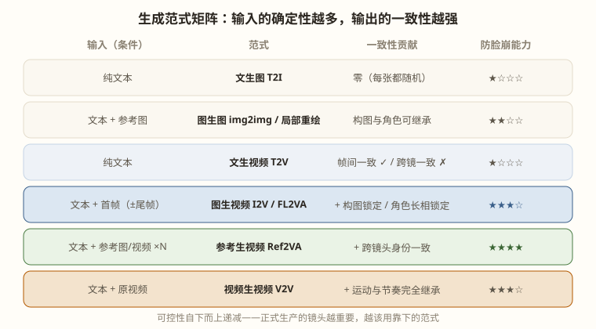

文生图 / 图生图 / 文生视频 / 图生视频 / 参考生视频 / 视频生视频——它们的本质区别只有一个：你给模型多少确定性
所有"X 生 Y"范式共用同一台发动机（潜空间扩散去噪），区别只在进料。而进料的意义可以用一句话说穿：每一种范式，都是为了把某种"一致性"从运气手里夺回来。
范式选择的本质就是一致性工程，而一致性问题的重灾区就是"脸"——人脸是观众最敏感、模型最容易崩的部位。本章末尾有脸崩专题。

原理：纯噪声 + 文本条件，denoise=1.0。用途：每个镜头的首帧初稿、概念探索。你的 Flux.1 dev 就是干这个的。一致性定位：零保障——它的产物是后续范式的"原材料"，一致性靠后续环节建立。
原理：把已有图片加"半量噪声"（denoise 0.3~0.7）再去噪——保留大结构，重画细节。局部重绘再加蒙版：只重画选中区域。
| denoise | 效果 | 典型用途 |
|---|---|---|
| 0.2~0.35 | 几乎不变，仅微调质感 | 首帧去噪点、统一色调 |
| 0.4~0.6 | 保留构图，重塑内容 | 换角色服装、改场景陈设 |
| 0.7~0.85 | 只留大概轮廓 | 草图→成稿、风格迁移 |
一致性定位：首帧的"家族相似性"来源——同一角色设定图派生各镜头首帧，比每张纯 T2V 重画一致得多。
第 13 章已详述。补一个一致性视角的评价：T2V 的帧间一致性是有的（时空注意力保证单条视频内不闪），但跨镜头一致性为零——这条的舰长和下条的舰长是两个随机长相。所以 T2V 做不了多镜头叙事，只能用于单镜头探索。
原理：首帧经 VAE 编码后拼进潜码起始位置，模型的去噪过程从这个"锚点"向外推演。术语对照：I2V 是通用叫法；FL2VA 是 H3 体系的叫法（First-Last-frame-to-Video-Action），强调还支持尾帧；LTX-2.3 里就叫 I2V。同一个东西，不同厂商的命名。
一致性定位：构图 + 角色长相 + 场景全部锁死。它是性价比最高的一致性武器——首帧是图像模型出的，脸在首帧阶段就被你人工验收过了，视频模型只需"让这张合格的脸动起来"。
原理：与 I2V 有本质区别——参考图不占潜码的"起始帧"位置，而是被编码成身份特征 token注入注意力层。所以参考图不定构图，只定"谁/什么东西"。你可以让被锁定的角色出现在任何全新构图里。
一致性定位：跨镜头身份一致——这是 I2V 给不了的（I2V 各镜首帧不同，长相仍可能漂移）。代价：参考特征会拖慢生成（每步都要过参考 token），且对侧脸/大角度仍有崩坏率。
原理：原视频编码进潜空间 → 加部分噪声（denoise<1）→ 按新提示词去噪重绘。运动轨迹、节奏、构图从原视频继承，外观按提示词重造。三种典型用法：
| 用法 | denoise | 场景 |
|---|---|---|
| 质感增强 | 0.2~0.35 | AI 原片去塑料感（但第 18 章说过：超分修复器通常更划算） |
| 风格迁移 | 0.45~0.6 | 实拍素材 → 游戏 CG 风；真人预演片 → 成片风格 |
| 白模转 CG | 0.6~0.75 | Blender/引擎白模动画 → 成品级画面，运镜 100% 精确 |
对游戏团队，V2V 打开了一条混血管线：用引擎/Blender 搭白模动画（运镜、走位、节奏全精确）→ V2V 重绘成 CG 画质。这绕开了 AI 视频"运镜不可控"的最大短板——镜头语言在白模阶段就是完美的。LTX-2.3 的视频编辑模式和 H3 的参考视频输入都支持这一路。
| 要锁的东西 | 首选范式 | 备选/叠加 |
|---|---|---|
| 单条视频内不闪 | 任何范式（模型自带） | — |
| 构图/场景布局 | I2V 首帧 | V2V |
| 角色长相（跨镜头） | Ref2VA | I2V 首帧精修 + 锚句；角色 LoRA（第 21 章） |
| 运动与运镜轨迹 | V2V（白模驱动） | I2V 首尾帧 |
| 全片色调风格 | 首帧统一风格基座 | 剪辑期 LUT 兜底（第 20 章） |
脸崩的三个成因：脸在画面里占比太小（模型分配给面部的 token 少）、大幅度头部运动（训练数据稀缺区）、跨镜头身份漂移（无锚点）。对症下药：
ref_image_size=max。文生图：Flux 出瞳孔特写概念图 —— 产出首帧素材。
图生图：对首帧瞳孔区域 inpaint（denoise 0.5）精修行星倒影 —— 首帧验收。
文生视频：直接写提示词生成 —— 脸和构图随机，本片不用。
图生视频：首帧接入 H3 first_frame，提示词只写 "the pupil slowly contracts, extremely slow push in" —— 主力做法。
参考生视频：叠加 3 张舰长设定照 —— 保证这张脸与 S04/S06/S09 是同一人。
视频生视频：若先用手机实拍一段"人眼特写"做运镜参考，denoise 0.5 重绘成 CG —— 运镜强迫症的选择。
六范式不是互斥选项，产品级镜头几乎总是组合：
| 组合 | 解决什么 | 成本 |
|---|---|---|
| T2I → img2img 精修 → FL2VA | 构图锁定 + 首帧质量达标 | 基准成本（标配流水线） |
| 上者 + Ref2VA | 再叠加跨镜身份一致 | +20~40% 生成时长 |
| 首尾帧 + Ref2VA | 状态切换镜头中的角色保真 | 最高，仅给关键镜头 |
| 白模动画 → V2V → 超分 | 精确运镜 + CG 质感 | 省去返工，总账常更省 |
组合的收益是乘法：首帧把构图废片率降到接近零，Ref2VA 再把身份废片率压一半——两层叠加后，综合废片率从纯 T2V 的 70% 降到 20% 以下。组合的成本是加法，收益是乘法，这就是为什么正式生产没有"单范式镜头"。
每种范式的"进料"都是可沉淀的资产：首帧图、设定参考图、白模动画、种子记录。项目结束时按范式入口归档（第 20 章的归档结构），下一部作品的边际成本会显著下降——第一部作品买设备，第二部作品只付电费。